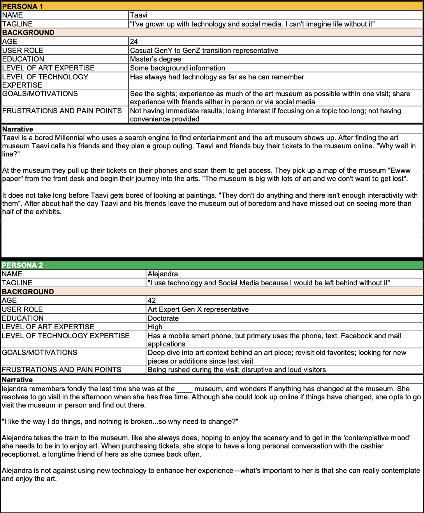
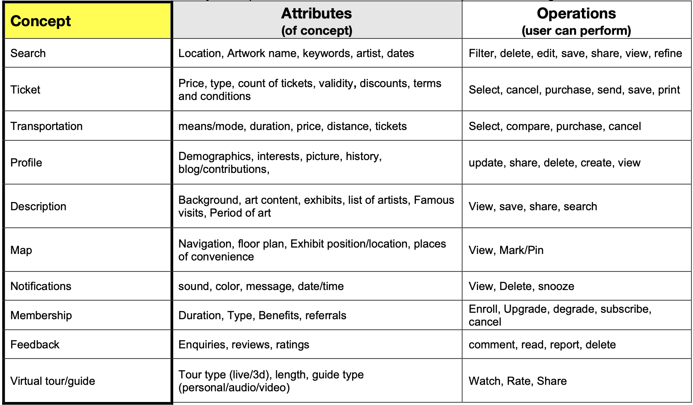
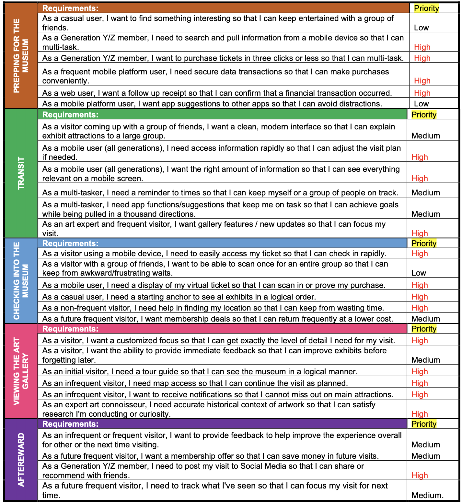

User Centered Design
Design Research & Implementation
Introduction
This project gave me the opportunity to choose an activity that I could design an integrated app experience for. Based on my familiarity with the Museum visit experience, I pursued the design of an app that could provide more educational and entertaining interactions with the museum
Proposal
What? The activity is visiting the Andy Warhol art museum to interact, enjoy and learn about the art and the artist
Why? The existing experience of the museum lacks the retention and reminiscence factor towards the art and educational information received by the people from the visit and making the experience effortless. Visitors also feel that sometimes they are unable to get most of the museum in the stipulated time.
Benefit: The new app will include features to purchase ticket conveniently, bookmark paintings and deliver valuable information about the artworks. Thereby, increase the engagement of the audience visit to the museum.
Affordances
PHYSICAL: Search button, QR codes/NFC tags that are made available next to individual painting
COGNITIVE: Colored CTA button for search The app beeps with push notification sound when you are a near a painting
SENSORY: Label ‘Search’ is written on the search button along with the icon Title of the painting is displayed on the app screen, along with painting details
FUNCTIONAL: Search function Display appropriate details of the painting onto the screen
Persona & User scenario

Concept Analysis

Requirements

Focus scenario and Persona
FOCUS TASK 1: CREATING AN ITINERARY
PERSONA: Expert User, Alejandra, Generation X Representative.
REASON FOR SELECTION: Our team selected this task because creating an itinerary has a lasting touchpoint with the museum experience. We chose the expert user, Alejandra, because her knowledge and expectations are high: she already has a baseline knowledge and a true desire to be at the museum. Despite having ‘learned technology’ in the middle of her life, she would still expansively use the ‘Create an Itinerary’ feature in visit preparation.
FOCUS TASK 2: FOLLOWING A VIRTUAL TOUR GUIDE
PERSONA: Casual User, Taavi, Generation Y/Z Representative.
REASON FOR SELECTION: Our team selected this task because Taavi is a novice user who has no idea about art. Visiting the museum to learn about art is a key part of the experience, and the interactive virtual tour guide is integral in enabling learning for uninterested people. The virtual tour guide is no strange concept to Taavi, as he has always had technology in his lifetime. The virtual tour guide is his lens in experiencing the museum and translating what he learns.
Cart sorting